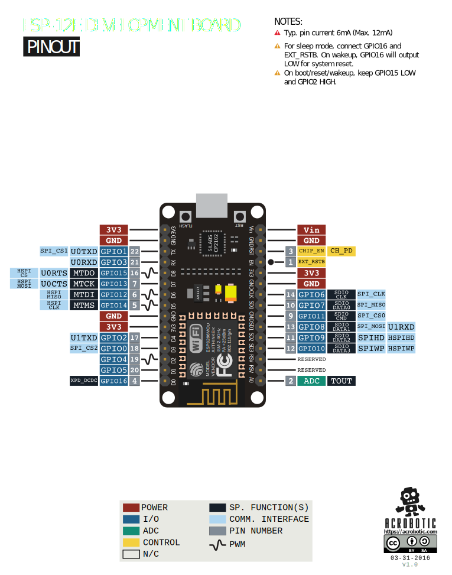

Chuẩn bị#
Phần cứng và kiến thức cần chuẩn bị#
Giống như tất cả các Vi điều khiển khác, việc lập trình cho ESP8266 cần những kiến thức về lập trình C cũng như phần cứng để thực hành. Trong sách này chúng ta sẽ sử dụng mạch phát triển NodeMCU để thử nghiệm tất cả các ví dụ mẫu.
Mạch phát triển NodeMCU#
Mạch này có bán rộng rãi trên thị trường, tiện lợi khi phát triển, và được cung cấp đầy đủ mạch nguyên lý, mở về phần cứng. Chip USB-TTL hỗ trợ DTR và RTS cho phép phần mềm nạp esptool.py có thể điều khiển ESP8266 vào chế độ nạp luôn mà không cần thao tác phần cứng nào.
Chú ý#
Tới thời điểm hiện nay, công cụ nạp cho ESP8266 có thể đạt tốc độ 921600 baud. Tuy nhiên, các mạch NodeMCU hiện trên thị trường sử dụng nhiều loại chip USB-TTL khác nhau, nên cần kiểm tra tốc độ hỗ trợ trước khi mua. Nếu tốc độ thấp, thì việc nạp ứng dụng cho ESP8266 khá lâu cho những ứng dụng lớn.
https://github.com/nodemcu/nodemcu-devkit-v1.0
Sơ đồ chân & sơ đồ khối ESP8266EX 
Mạch nguyên lý#
// Sơ đồ nguyên lý -> SVG //image::nodemcu_devkit_1.0.svg[NodeMCU schematic]
Những lựa chọn khác#
// Các mạch phát triển khác..
Cài đặt trình soạn thảo & cài đặt ban đầu#
Sublime Text#
Eclipse#
Notepad++#
Ngôn ngữ lập trình C#
Tất nhiên việc phát triển ứng dụng cho những Vi điều khiển ít tài nguyên, dung lượng bộ nhớ còn vài chục KiB thì hiếm có sự lựa chọn nào khác ngoài ngôn ngữ lập trình C/C++. Những ngôn ngữ khác như: Lua, Python cũng được phát triển cho ESP8266, nhưng để hoàn thành công việc càng dễ dàng, thì đòi hỏi tài nguyên càng nhiều. Và sự ổn định của ứng dụng sẽ phụ thuộc rất nhiều vào việc dư giả tài nguyên. Chip ESP8266 không được thiết kế để đủ tài nguyên chạy ổn định cho các trình thông dịch (Interpreter) này.
Makefile#
Để biên dịch được chúng ta cần hoàn thành việc cài đặt trình biên dịch bên trên, và tìm hiểu một chút về kịch bản Makefile. Các kiến thức này thông thường các bạn đều phải biết khi học về ngôn ngữ C. Nội dung phần này chỉ nói ngắn gọn, xúc tích những gì cần thiết nhất.
Makefile là công cụ kịch bản hóa quá trình biên dịch thường được sử dụng trong hệ điều hành Unix, Linux, tất nhiên có cả trên Windows nhưng không phổ biến. Nó đơn giản quá hóa trình thực hiện biên dịch bằng cách sử dụng các module có sẵn trong hệ điều hành.
Việc sử dụng Makefile trong các dự án C ít thường xuyên và thường được thiết kế sẵn bởi người tạo nên dự án đó. Do vậy, bạn chỉ cần hiểu sơ về Makefile để có thể dễ dàng sửa chữa theo ý mình, nếu không muốn chuyên sâu. Một số từ khóa google để dễ dàng tìm hiểu về Makefile: “Makefile basics”, “Makefile tutorial”.
Để biên dịch, bạn gõ make từ cửa sổ terminal, chương trình make sẽ tìm và đọc file mặc định có tên Makefile ở thư mục hiện hành và thực thi nó.
Cài đặt công cụ cần thiết#
- Trình soạn thảo trên máy tính, để viết mã nguồn C
- Trình biên dịch, nhằm mục địch biên dịch mã nguồn C sang mã máy
- Trình nạp, nạp mã máy đã biên dịch xuống Flash của ESP8266
- SDK
Cài đặt Git#
Cài đặt trình biên dịch & các thư viện cơ bản#
MacOS/OSX#
Bạn có ít nhất 2 cách để có trình biên dịch, đơn giản nhất là tải về từ 1 trong các link sau:
- https://esp8266.vn/esp8266-compiler-osx.zip
- http://esp8266vn.github.io/esp8266.vn/esp8266-compiler-osx.zip
và giải nén vào thư mục: /tools/esp8266/compiler/
Cách 2 phức tạp hơn, nhưng sẽ phù hợp với tất cả phiên bản hệ điều hành của bạn. Biên dịch Trình biên dịch từ mã nguồn:
sudo port install git gsed gawk binutils gperf grep gettext py-serial wget libtool autoconf automake
hdiutil create -size 5g -fs "Case-sensitive HFS+" -volname ESPTools ESPTools.sparsebundle
hdiutil attach ESPTools.sparsebundle <3>
sudo ln -s /Volumes/ESPTools/ /tools <3>
mkdir /tools/esp8266 <4>
mkdir /tools/esp8266/sdk <4>
mkdir /tools/esp8266/compiler <4>
cd /tools/esp8266/compiler
git clone -b lx106 git://github.com/jcmvbkbc/crosstool-NG.git <5>
cd crosstool-NG
sed -i.bak '1s/^/gettext=\'$'\n/' crosstool-NG/kconfig/Makefile
./bootstrap && ./configure --prefix=`pwd` && make && make install
./ct-ng xtensa-lx106-elf
./ct-ng build- Các thư viện cần thiết để biên dịch crosstool-NG, sử dụng MacPorts để cài đặt. Nếu chưa cài đặt MacPorts có thẻ tải tại đây: https://www.macports.org/
- Biên dịch
crosstool-NGcần định dạng ổ cứng hỗ trợ phân biệt đường dẫn chữ Hoa và chữ thường, nên cần tạo một ổ đĩa ảo như vậy. - Mount ổ đĩa
ESPTools ESPTools.sparsebundletới thư mục/tools/ - Tạo các thư mục cho để chứa SDK, trình biên dịch và công cụ nạp
- Clone dự án crosstool-NG, nhánh
lx106về, tiến hành các thao tác biên dịch
Lưu ý#
Lưu ý rằng, quá trình biên dịch cần khoảng 1 giờ (tùy cấu hình máy) và 1.5GiB dung lượng ổ cứng trống
Tiếp theo, cần phải thêm đường dẫn của compiler vào biến môi trường PATH của hệ điều hành
echo "export PATH=$PATH:/tools/esp8266/compiler/crosstool-NG/builds/xtensa-lx106-elf/bin" >> ~/.bash_profile <1>
source ~/.bash_profile - Thêm dòng
exportvào cuối file~/.bash_profilebằngecho sourceđể tải lại biến môi trường
Kiểm tra việc cài đặt, Có dòng này hiển thị ở cuối cùng thì việc cài đặt dã thành công
xtensa-lx106-elf-gcc -v
gcc version 4.8.2 (crosstool-NG 1.20.0) Windows#
Cài đặt Git
Tải về tại một trong các địa chỉ sau:
- http://*.ru
- https://esp8266.vn/esp8266-compiler-windows.zip
- http://esp8266vn.github.io/esp8266.vn/esp8266-compiler-windows.zip
Linux#
Tải công cụ nạp esptool.py, SDK và cài đặt ENV#
Công cụ COM Terminal#
Tải tài liệu từ Espressif#
//https://espressif.com/sites/default/files/documentation/esp8266-technical_reference_en.pdf